에너지관리기사 (2011-03-20 기출문제)
1과목: 연소공학
1. 탄소(C) 84%, 수소(H) 12%, 수분 4w%의 중량조성을 갖는 액체연료에서 수분을 완전히 제거한 다음 1시간당 5kg를 완전연소시키는데 필요한 이론공기량은 약 몇 Nm3/h 인가?
- 55.6
- 65.8
- 73.5
- 89.2
(정답률: 51%)

2. 연돌에 의한 통풍력에 대한 설명으로 옳은 것은?
- 연돌 높이의 평반근에 비례한다.
- 연돌 높이의 제곱에 비례한다.
- 연돌 높이에 반비례한다.
- 연돌 높이에 비례한다.
(정답률: 76%)
3. 일반적인 정상연소에 있어서 연소 속도를 지배하는 주된 요인은?
- 화학반응의 속도
- 공기 중 산소의 확산속도
- 연료의 착화온도
- 배기가스 중의 CO2 농도
(정답률: 86%)
4. 어떤 수성가스의 조성은 용적 %로 H2 50%, CO 40%, CO2 5%, N2 5%이다. 0℃, 1atm의 수성가스 1m3의 발열량을 아래 식을 이용하여 구하면 약 몇 kcal 인가?
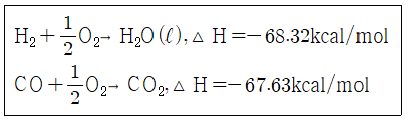
- 2733
- -2733
- 135.95
- -135.95
(정답률: 46%)
5. 공기비(m)에 대한 식으로 옳은 것은?
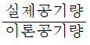
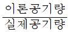
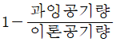
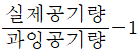
(정답률: 89%)
6. 증기운폭발의 특징에 대한 설명으로 틀린 것은?
- 폭발보다 화재가 많다.
- 연소에너지의 약 20%만 폭풍파로 변한다.
- 증기운의 크기가 클수록 점화될 가능성이 커진다.
- 점화위치가 방출점에서 가까울수록 폭발위력이 크다.
(정답률: 86%)
7. 연소 배기가스 중의 O2나 CO2 함유량을 측정하는 경제적인 이유로 가장 적당한 것은?
- 연소배가스량 계산을 위하여
- 공기비를 조절하여 열효율을 높이고 연료소비량을 줄이기 위해서
- 환원혐의 판정을 위하여
- 완전 연소가 되는지 확인하기 위해서
(정답률: 86%)
8. 다음 가스 중 저위발열량(kcal/kg)이 가장 낮은 것은?
- 수소
- 메탄
- 아세틸렌
- 에탄
(정답률: 65%)
9. 분진을 포함하고 있는 가스를 선회시켜 입자에 원심력을 주어 분리시키는 방법으로서 고성능집진장치의 전처리용으로 주로 사용되는 것은?
- 전기식 집진장치
- 벤투리스크러버
- 사이클론 집진장치
- 백필터 집진장치
(정답률: 80%)
10. 저위발열량 93766kJ/Nm3의 C3H8을 공기비 1.2로 연소시킬 때의 이론연소온도는 약 몇 K 인가? (단, 배기가스의 평균비열은 1.653kJ/Nm3ㆍK이고 다른 조건은 무시한다.)
- 1656
- 1756
- 1856
- 1956
(정답률: 44%)
11. 어떤 열설비에서 연료가 완전연소하였을 경우에 배기가스 내의 잉여 산소농도가 10% 이었다. 이 때 이 연소기기의 공기비는 약 얼마인가?
- 1.0
- 1.5
- 1.9
- 2.5
(정답률: 63%)
12. 고위발열량이 9000kcal/kg인 연료 3kg이 연소할 때의 총저위발열량은 약 몇 kcal인가? (단, 이 연료 1kg당 수소분은 15%, 수분은 1%의 비율로 들어 있다.)
- 12300
- 24550
- 43880
- 51800
(정답률: 70%)
13. 폐열회수에 있어서 검토해야 할 사항이 아닌 것은?
- 폐열의 증가 방법에 대해서 검토한다.
- 폐열회수의 경제적 가치에 대해서 검토한다.
- 폐열의 양 및 질과 이용 가치에 대해서 검토한다.
- 폐열회수 방법과 이용 방안에 대해서 검토한다.
(정답률: 86%)
14. 프로판 1Nm3의 완전연소에 필요한 이론산소량(Nm3)은?
- 1
- 2
- 4
- 5
(정답률: 77%)
15. 고위발열량과 저위발열량의 차이는 어떤 성분 때문인가?
- 황
- 탄소
- 질소
- 수소
(정답률: 82%)
16. 기체연료의 일반적인 특징에 대한 설명 중 틀린 것은?
- 화염온도의 상승이 비교적 용이하다
- 연소 후에 유해성분의 잔류가 거의 없다.
- 연소장치의 온도 및 온도분포의 조절이 어렵다.
- 다량으로 사용하는 경우 수송 및 저장이 어렵다.
(정답률: 81%)
17. 석탄의 저장 시 자연발화를 방지하기 위하여 탄층 1m 깊이의 온도를 측정하여 몇 ℃ 이하가 되도록 하는 것이 가장 적당한가?
- 40
- 60
- 80
- 100
(정답률: 80%)
18. 실제기체가 이상기체의 방정식을 근사적으로 만족하는 경우는?
- 압력이 높고 온도가 낮을 때
- 압력과 온도가 낮을 때
- 압력이 낮고 온도가 높을 때
- 압력과 온도가 높을 때
(정답률: 78%)
19. 질소산화물의 생성을 억제하는 방법이 아닌 것은?
- 물분사법
- 2단 연소법
- 배출가스 재순환법
- 고농도(高濃度)산소 연소법
(정답률: 81%)
20. 연소시 배기가스량을 구하는 식으로 옳은 것은? (단, G : 배가스량, Go : 이론배가스량, Ao : 이론공기량, m : 공기비이다.)
- G = Go + (m-1) Ao
- G = Go + (m+1) Ao
- G = Go - (m+1) Ao
- G = Go + (1-m) Ao
(정답률: 79%)
2과목: 열역학
21. 어떤 기체의 정압비열이 다음 식으로 표현될 때 32℃와 800℃ 사이에서의 이 기체의 평균 정압 비열(Cp)은? (단, Cp의 단위는 kJ/molㆍ℃.T의 단위는 ℃이다.)
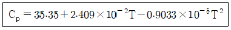
- 35.35
- 43.36
- 57.43
- 95.84
(정답률: 53%)
22. 증기의 기본적 성질에 대한 설명으로 틀린 것은?
- 물의 3중점은 물과 얼음과 증기의 3상이 공존하는 점이며 이 점의 온도는 0.01℃(273.16K)이다.
- 임계점에서는 액상과 기상의 구분이 없다.
- 임계 압력하에서의 증발열은 0이 된다.
- 증발 잠열은 포화 압력이 높아질수록 커진다.
(정답률: 75%)
23. 포화액의 온도를 유지하면서 압력을 높이면 어떤 상태가 되는가?
- 습증기
- 압축(과냉)액
- 과열증기
- 포화액
(정답률: 72%)
24. 간극체적이 피스톤 행정 체적의 8%인 피스톤 기관의 압축비는?
- 13.5
- 12.5
- 1.08
- 0.08
(정답률: 41%)
25. 저 발열량 11000kcal/kg인 연료를 연소시켜서 900kW의 동력을 얻기 위해서는 매 분당 약 몇 kg의 연료를 연소시켜야 하는가? (단, 연료는 완전연소되며 발생한 열량의 50%가 동력으로 변환된다고 가정한다.)
- 1.37
- 2.34
- 3.82
- 4.17
(정답률: 60%)
26. 랭킨 사이클의 순서를 차례대로 옳게 나열한 것은?
- 단열압축-정압가열-단열팽창-정압냉각
- 단열압축-등온가열-단열팽창-정적냉각
- 단열압축-동적가열-등압팽창-정압냉각
- 단열압축-정압가열-단열팽창-정적냉각
(정답률: 78%)
27. 액화공정을 나타낸 그래프에서 ①, ②, ③ 과정 중 액화가 불가능한 공정을 나타낸 것은?
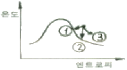
- ①
- ②
- ③
- ①, ②, ③
(정답률: 79%)
28. 온도가 T1인 이상기체를 가역단열과정으로 압축하였다. 압력이 P1에서 P2로 변하였을 때, 압축 후의 온도 T2를 옳게 나타낸 것은? (단, k는 이상기체의 비열비를 나타낸다.)
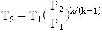
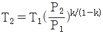
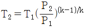
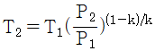
(정답률: 68%)
29. 등온 압축계수 K를 옳게 표시한 것은?
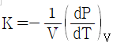
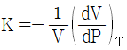
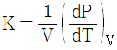
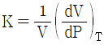
(정답률: 65%)
30. 압력이 100kPa 인 기를 가열하여 200kPa가 되었다. 초기 상태 공기의 비체적을 1m3/kg, 최종 상태 공기의 비체적을 2m3/kg이라고 할 때, 이 과정 동안의 엔트로피의 변화량은 약 몇 kJ/kgㆍK인가? (단, 공기의 정적비열은 0.7kJ/kgㆍK, 정압비열은 1.0 kJ/kgㆍK이다.)
- 0.3
- 0.52
- 1.0
- 1.18
(정답률: 47%)
31. 공기의 기체상수 R이 0.287kJ/kgㆍK일 때 표준상태(0℃, 1기압)에서 밀도는 약 몇 kg/m3인가?
- 1.29
- 1.87
- 2.14
- 2.48
(정답률: 51%)
32. 무차원이 아닌 것은?
- 비리멀계수
- 마하수
- 임계 압력비
- 노즐 효율
(정답률: 65%)
33. 엔탈피가 3140kJ/kg인 과열증기가 노즐에 저속상태로 들어와 출구에서 엔탈피가 3010kJ/kg인 상태로 나갈 때 출구에서의 수증기 속도(m/s)는?
- 8
- 25
- 160
- 510
(정답률: 49%)
34. 가역적으로 움직이는 열기관이 260℃에서 200kJ의 열을 흡수하여 40℃로 배출한다. 40℃의 열저장조로 배출한 열량은 약 몇 kJ인가?
- 0
- 33
- 47
- 117
(정답률: 47%)
35. 이상기체 1mol이 그림의 a과정을 따를 때 내부 에너지의 변화량은 약 몇 J인가? (단, 정적비열 Cv는 1.5R이고, 기체상수 R값은 8.314kJ/kmolㆍ℃이다.)
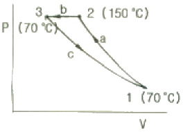
- 498
- 760
- 998
- 1013
(정답률: 61%)
36. 냉장고가 저온체에서 30kW에서 열을 흡수하여 고온체로 40kW의 열을 방출한다. 이 냉장고의 성능계수는?
- 2
- 3
- 4
- 5
(정답률: 70%)
37. 냉동사이클의 T-s 선도에서 냉매단위질량당 냉각열량 qL과 압축기의 w를 옳게 나타낸 것은? (단, h는 엔탈피는 나타낸다.)
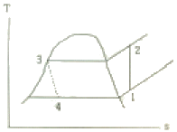
- qL=h3-h4, w=h2-h1
- qL=h1-h4, w=h2-h1
- qL=h2-h3, w=h1-h4
- qL=h3-h4, w=h1-h4
(정답률: 62%)
38. 실제기체를 이상기체로 근사시키기 가장 좋은 조건은?
- 고압, 저온
- 고압, 고온
- 저압, 저온
- 저압, 고온
(정답률: 77%)
39. 개방시스템 내의 이상기체에 대한 등온압축 과정에서 단위 질량당 일(w)을 표시하는 식은? (단, R은 기체상수, T는 절대온도, P는 압력, V는 체적, 첨자 1은 처음상태, 첨자 2는 나중상태이다.)
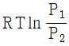
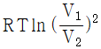
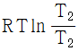
- P(V2-V1)
(정답률: 74%)
40. 30℃~600℃에서 작동하는 카르노사이클의 열효율은 몇 %인가?
- 60.7%
- 65.3%
- 66.7%
- 68.5%
(정답률: 56%)
3과목: 계측방법
41. 다음 중 파스칼의 원리를 가장 바르게 설명한 것은?
- 밀폐 용기 내의 액체에 압력을 가하면 압력은 모든 부분에 동일하게 전달된다.
- 밀폐 용기 내의 액체에 압력을 가하면 압력은 가한점에만 전달된다.
- 밀폐 용기 내의 액체에 압력을 가하면 압력은 가한 반대편으로만 전달된다.
- 밀폐 용기 내의 액체에 압력을 가하면 압력은 가한점으로부터 일정 간격을 두고 차등적으로 전달된다.
(정답률: 84%)
42. 다음 중 탄성식 압력계가 아닌 것은?
- 부르돈관 압력계
- 벨로우즈 압력계
- 다이어프램 압력계
- 경사관 압력계
(정답률: 66%)
43. 경보 및 액면 제어용으로 널리 사용되는 액면계는?
- 유리관식 액면계
- 차압식 액면계
- 부자식 액면계
- 퍼지식 액면계
(정답률: 75%)
44. 다음 중 기체크로마토그래피와 관련이 없는 것은?
- 컬럼(colum)
- 캐리어가스(carrier gas)
- 불꽃광도검출기(FPS)
- 속빈 음극등(hollow cathode lamp)
(정답률: 72%)
45. 열전대온도계의 보호관 중 상용 사용온도가 약 1000℃이며 내열성, 내산성이 우수하나 환원성가스에 기밀성이 약간 떨어지는 것은?
- 카보런덤관
- 자기관
- 석영관
- 황동관
(정답률: 70%)
46. 1차 지연요소에서 시점수(T)가 클수록 어떻게 되는가?
- 응답속도가 느려진다.
- 응답속도가 빨라진다.
- 응답속도가 일정해진다.
- 시정수와 응답속도는 상관이 없다.
(정답률: 70%)
47. 다음 [보기]에서 설명하는 제어동작은?
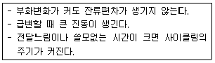
- PD 동작
- 뱅뱅 동작
- PI 동작
- P동작
(정답률: 82%)
48. Rankine 온도가 671.07일 때 Kelvin 온도는 약 몇 도인가?
- 211
- 300
- 373
- 460
(정답률: 76%)
49. 다음 중 접촉법으로 측정되는 온도계는?
- 광고온계
- 열전대온도계
- 방사온도계
- 색온도계
(정답률: 78%)
50. 탄성식 압력계의 일반 교정에 주로 사용되는 압력계는?
- 액주식 압력계
- 격막식 압력계
- 전기식 압력계
- 분동식 압력계
(정답률: 79%)
51. 압력식 온도계를 이용하는 방법으로 가장 거리가 먼 것은?
- 고체 팽창식
- 액체 팽착식
- 기체 팽착식
- 증기 팽착식
(정답률: 76%)
52. 월트만(Waltman)식에 대한 설명으로 옳은 것은?
- 전자식 유량계의 일종이다.
- 용적식 유량계 중 박막식이다.
- 유속식 유량계 중 터빈식이다.
- 차압식 유량계 중 노즐식과 벤투리식을 혼합한 것이다.
(정답률: 65%)
53. 보일러를 자동 운전할 경우 송풍기가 작동되지 않으면 연료공급 전자 밸브가 열리지 않는 인터록의 종류는?
- 송풍기 인터록
- 전자밸브 인터록
- 프리퍼지 인터록
- 불착화 인터록
(정답률: 78%)
54. 유체의 흐름 중에 전열선을 넣고 유체의 온도를 높이는데 필요한 에너지를 측정하여 유체의 질량유량을 알 수 있는 것은?
- 토마스식 유량계
- 정전압식 유량계
- 정온도식 유량계
- 마그네틱식 유량계
(정답률: 70%)
55. 면적식 유량계에 대한 설명으로 틀린 것은?
- 정도가 높아 정밀측정에 적합하다.
- 측정하려는 유체의 밀도를 미리 알아야 한다.
- 압력손실이 적고 균등 유량을 얻을 수 있다.
- 슬러리나 부식성 액체의 츠정이 가능하다.
(정답률: 60%)
56. 다음 압력계 중 정도(精度)가 가장 높은 것은?
- 경사관 압력계
- 분동식 압력계
- 부르톤관식 압력계
- 다이어프램 압력계
(정답률: 69%)
57. 차압식 유량계에서 압력차가 처음보다 4배 커지고 관의 지름이 1/2로 되었다면 나중 유량(Q2)과 처음유량(Q1)의 관계를 옳게 나타낸 것은?
- Q2=0.25×Q1
- Q2=0.35×Q1
- Q2=0.5×Q1
- Q2=0.71×Q1
(정답률: 72%)
58. 벨로우즈(Bellows) 압력계에서 Bellows 탄성의 보조로 코일 스프링을 조합하여 사용하는 주된 이유는?
- 측정압력 범위를 넓히기 위하여
- 감도를 증대시키기 위하여
- 히스테리시스 현상을 없애기 위하여
- 측정지연 시간을 없애기 위하여
(정답률: 83%)
59. 열전도율형 CO2 분석계의 사용 시 주의사항에 대한 설명 중 틀린 것은?
- 브리지의 공급 전류의 점검을 확실하게 한다.
- 셀의 주위 온도와 측정가스 온도는 거의 일정하게 유지시키고 온도의과도한 상승을 피한다.
- H2를 혼입시키면 정확도를 높이므로 같이 사용한다.
- 가스의 유속을 일정하게 하여야 한다.
(정답률: 83%)
60. 자동제어에서 미분동작을 가장 바르게 설명한 것은?
- 조절계의 출력 변화가 편차에 비례하는 동작
- 조절계의 출력 변화의 속도가 편차에 비례하는 동작
- 조절계의 출력 변화가 편차의 변화 속도에 비례하는 동작
- 조작량이 어떤 동작 신호의 값을 경계로 하여 완전히 전개 또는 전폐되는 동작
(정답률: 50%)
4과목: 열설비재료 및 관계법규
61. 석면 보온재(石綿保溫材)의 최고 안전사용 온도는?
- 100℃
- 600℃
- 800℃
- 1000℃
(정답률: 68%)
62. 검사대상기기 조종자의 신고사유가 발생한 경우 발생한 날로부터 며칠 이내에 신고하여야 하는가?
- 7일
- 15일
- 30일
- 60일
(정답률: 69%)
63. 평균에너지 소비효율의 산정방법에 대한 내용 중 틀린 것은?
- 산정방법, 개선기산, 공표방법 등 필요한 사항은 지식경제부령으로 정한다.
- 산정방법은
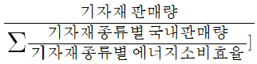
이다. - 평균에너지 소비효율의 개선기간은 개선명령으로부터 다음해 1월 31일까지로 한다.
- 개선명령을 받은 자는 개선명령일부터 60일 이내에 개선명령 이행계획을 수립하여 지식경제부장관에게 제출하여야 한다.
(정답률: 68%)
64. 요로를 균일하게 가열하는 방법이 아닌 것은?
- 노내 가스를 순환시켜 연소 가스량을 많게 한다.
- 가열시간을 되도록 짧게 한다.
- 장염이나 축차연소를 행한다.
- 벽으로부터의 방사열을 적절히 이용한다.
(정답률: 77%)
65. 다음 중 슬래그와 접촉하여 가장 쉽게 침식되는 내화물은?
- 납석질 내화물
- 규석질 내화물
- 탄소질 내화물
- 마그네시아질 내화물
(정답률: 74%)
66. 다음 중 고로(blast furnace)의 특징에 대한 설명이 아닌 것은?
- 축열식, 탄화실, 연소실로 구분되며 탄화실에는 석탄 장입구와 가스를 배출시키는 상승관이 있다.
- 산소의 제거는 CO 가스에 의한 간접 환원반응과 코크스에 의한 직접 환원반응으로 이루어진다.
- 철광석 등의 원료는 노의 상부에서 투입되고 용선은 노 하부에서 배출된다.
- 노 내부의 반응을 촉진시키기 위해 안력을 높이거나 열풍의 온도를 높이는 경우도 있다.
(정답률: 63%)
67. 자발적 협약체결 기업의 지원 등에 따른 자발적 협약의 평가기준의 항목이 아닌 것은?
- 에너지 절감량 또는 온실가스 배출 감축량
- 계획 대비 달성률 및 투자실적
- 자원 및 에너지 재활용 노력
- 에너지이용합리화자금 활용실적
(정답률: 70%)
68. 한국산업표준에서 규정하고 있는 「내화물」의 내화도 하한치(下限値)는?
- SK16
- SK18
- SK26
- SK28
(정답률: 73%)
69. 요ㆍ로의 열효율을 높이는 방법으로 가장 거리가 먼 것은?
- 요ㆍ로의 적정 압력 유지
- 폐가스의 폐열회수
- 발열량이 높은 연료 사용
- 적정한 연소장치 선택
(정답률: 68%)
70. 에너지절약전문기업의 등록이 취소된 에너지절약전문기업은 원칙적으로 등록 취소일로부터 얼마의 기간이 지나면 다시 등록을 할 수 있는가?
- 1년
- 2년
- 3년
- 5년
(정답률: 78%)
71. 고압 배관용 탄소강관에 대한 설명 중 틀린 것은?
- 관의 제조는 킬드강을 사용하여 이음매 없이 제조한다.
- KS 규격 기호로 SPPS 라고 표기한다.
- 350℃이하, 100kg/cm2 이상의 압력범위에서 사용이 가능하다.
- NH3 합성용 배관, 화학공업의 고압유체 수송용에 사용한다.
(정답률: 82%)
72. 에너지이용합리화법에 의한 에너지관리자의 기본교육과정 교육기간으로 옳은 것은?
- 4시간
- 1일
- 3일
- 5일
(정답률: 82%)
73. 고온용 무기질 보온재로서 석영을 녹여 만들며, 내약품성이 뛰어나고, 최고사용온도가 1100℃정도인 것은?
- 유리섬유(glass wool)
- 석면(asbestos)
- 펄라이트(pearlite)
- 세라믹 파이버(ceramic fiber)
(정답률: 78%)
74. 케스터블(castable)내화물에 대한 설명으로 틀린 것은?
- 사용현장에서 필요한 형상이나 치수로 자유롭게 성형할 수 있다.
- 시공 후 약 24시간 후에 건조, 승온이 가능하고 경화제로 알루미나시멘트를 사용한다.
- 잔존수축과 열팽창이 크고 노내 온도가 변화하면 스폴링을 잘 일으킨다.
- 점토질이 많이 사용되고 용도에 따라 고알루미나질이나 크롬질도 사용된다.
(정답률: 74%)
75. 에너지절약전문기업 등록의 취소요건이 아닌 것은?
- 규정에 의한 등록기준에 미당하게 된 때
- 보고를 하지 아니하거나 허위보고를 한 때
- 정당한 사유 없이 등록 후 3년 이상 계속하여 사업수행실적이 없는 때
- 사업수행과 관련하여 다수의 민원을 일으킨 때
(정답률: 81%)
76. 내화물의 구비조건으로 옳지 않은 것은?
- 상온에서 압축강도가 작을 것
- 내마모성 및 내침식성을 가질 것
- 재가열 시 수축이 적을 것
- 사용온도에서 연화변형하지 않을 것
(정답률: 72%)
77. 다음 중 개조검사에 해당되지 않는 경우는?
- 증기보일러를 온수보일러로 개조하는 경우
- 보일러 섹션의 증감에 의하여 용량을 변경하는 경우
- 보일러 본체를 단열재로 보강하는 경우
- 연료 또는 연소방법을 변경하는 경우
(정답률: 61%)
78. 마그네시아질 내화물이 수증기에 의해서 조직이 악화되는 현상은?
- 슬레킹(slaking) 현상
- 더스팅(dusting) 현상
- 침식 현상
- 스폴링(spalling) 현상
(정답률: 73%)
79. 산(酸) 등의 화학약품을 차단하는데 주로 사용하는 밸브로서 내약품성, 내열성의 고무로 만든 것을 밸브시트에 밀어붙여서 유량을 조절하는 밸브는?
- 다이어프램밸브
- 슬루우스밸브
- 버터플라이밸브
- 체크밸브
(정답률: 77%)
80. 에너지이용 합리화 기본계획에 대한 설명으로 틀린 것은?
- 지식경제부장관은 매 5년 마다 수립하여야 한다.
- 에너지절약형 경제구조로의 전환에 관한 사항이 포함되어야 한다.
- 지식경제부장관은 시행결과를 평가하고, 해당 관계 행정기관의 장과 시, 도지사에게 그 평가 내용을 통보하여야 한다.
- 관련행정기관의 장은 매년 실시 계획을 수립하고 그 결과를 반기별로 지식경제부장관에게 제출하여야 한다.
(정답률: 70%)
5과목: 열설비설계
81. 열확산계수에 대한 설명 중 틀린 것은?
- 단위는 m2/s이다.
- 열전도성을 나타낸다.
- 온도에 대한 함수이다.
- 열용량 계수에 비례한다.
(정답률: 48%)
82. 노통보일러 중 원통형의 노통이 2개인 보일러는?
- 라몬트보일러
- 바브콕보일러
- 다우삼보일러
- 랭커셔보일러
(정답률: 80%)
83. 보일러통의 외경이 800mm이고 길이가 2500mm인 랭카셔 보일러의 전열면적은?
- 2.0m2
- 4.8m2
- 6.3m2
- 8.0m2
(정답률: 41%)
84. 보일러 재료로 이용되는 대부분의 강철제는 200~300℃에서 최대의 강도를 유지하나 몇 ℃ 이상이 되면 재효의 강도가 급격히 저하되는가?
- 350℃
- 400℃
- 450℃
- 500℃
(정답률: 72%)
85. 노통보일러에서 사용하는 스테이(버팀)에 대한 설명으로 틀린 것은?
- 도그스테이는 맨홀 뚜껑의 보강재 버팀이다.
- 경사버팀은 화실천장 과열부분의 입궤현상을 방지하는 버팀이다.
- 가세트버팀은 평형경판을 사용하여 경판, 동판 또는 관판이나 동판의지지 보강재이다.
- 튜브스테이는 연관의 팽창에 따른 관판이나 경판의 팽출에 대한 보강재이다.
(정답률: 54%)
86. 노통연관식 보일러의 특징에 대한 설명으로 옳은 것은?
- 외분식이므로 방산손실열량이 크다.
- 고압이나 대용량보일러로 적당하다.
- 내부청소가 간단하므로 급수처리가 필요 없다.
- 보일러의 크기에 비하여 전열면적이 크고 효율이 좋다.
(정답률: 54%)
87. 보일러 1마력을 상당 증발량으로 환산하면 약 몇 kg/h가 되는가?
- 3.⑤
- 15.65
- 30.⑤
- 34.55
(정답률: 73%)
88. 다음 중 보일러의 탈산소재로 사용되지 않는 것은?
- 아황산나트륨
- 히드라진
- 탄닌
- 수산화나트륨
(정답률: 67%)
89. 열의 이동에 대한 설명 줄 틀린 것은?
- 전도란 정지하고 이쓴ㄴ 물체 속을 열이 이동하는 현상을 말한다.
- 대류란 유동물체가 고온부분에서 저온부분으로 이동하는 현상을 말한다.
- 복사란 전자파의 에너지형태로 열이 고온물체에서 저온물체로 이동하는 현상을 말한다.
- 열관류란 유체가 열을 받으면 밀도가 작아져서 부력이 생기기 때문에 상승현상이 일어나는 것을 말한다.
(정답률: 68%)
90. 노벽의 두께가 200mm이고, 그 외측은 75mm의 석면판으로 보온되어 있다. 노벽의 내부온도가 400℃이고, 외측온도가 38℃일 경우 노벽의 면적이 10m2라면 열손실은 약 몇 kcal/h인가? (단, 노벽과 석면판의 평균 열전도도는 각각 3.3, 0.13kcal/mㆍhㆍ℃이다.)
- 4674
- 5674
- 6674
- 7674
(정답률: 61%)
91. 물의 탁도(濁度)에 대한 설명으로 옳은 것은?
- 카올린 1g이 증류수 1L속에 들어 있을 때의 색과 같은 색을 가지는 물을 탁도 1도의 물이라 한다.
- 카올린 1mg이 증류수 1L속에 들어 있을 때의 색과 같은 색을 가지는 물을 탁도 1도의 물이라 한다.
- 탄산칼슘 1g이 증류수 1L속에 들어 있을 때의 색과 같은 색을 가지는 물을 탁도 1도의 물이라 한다.
- 탄산칼슘 1mg이 증류수 1L속에 들어 있을 때의 색과 같은 색을 가지는 물을 탁도 1도의 물이라 한다.
(정답률: 81%)
92. 어떤 원통형 탱크가 압력 3kg/cm3, 직경 5m, 강판 두께 10mm이다. 탱크의 이름 효율을 75%로 할 때 강판의 인장강도는 약 몇 kg/mm2로 하여야 하는가? (단, 탱크의 반경방향으로 두께에 응력이 유기되지 않는 이론값을 계산한다.)
- 10
- 20
- 300
- 400
(정답률: 35%)
93. 복사능 0.5, 전열면적 2m2인 물질이 복사능 0.8, 전열면적 10m2인 물질 속에 둘러싸여 복사전열이 일어날 때의 총괄호환인자(F12)는 약 얼마인가?
- 0.4
- 0.5
- 0.6
- 0.7
(정답률: 46%)
94. 노통 보일러에 2~3개의 겔로웨이관(Galloy tube)을 직각으로 설치하는 이유로서 가장 거리가 먼 것은?
- 노통을 보강하기 위하여
- 보일러수의 순환을 돕기 위하여
- 전열 면적을 증가시키기 위하여
- 수격작용(Water hammer)를 방지하기 위하여
(정답률: 63%)
95. 열정산의 기준온도로서 어느 것을 사용하는 것이 가장 편리한가?
- 0
- 15
- 18
- 25
(정답률: 74%)
96. 어떤 연료 1kg의 발열량이 6320kcal이다. 이 연료 50kg을 연소시킬 때 발생하는 열은 모두 일로 전환된다면 이 때 발생하는 동력은 약 몇 PS 인가?
- 300
- 400
- 500
- 600
(정답률: 52%)
97. 코르시니 보일러의 노통을 한쪽으로 편심 부착시키는 가장 큰 이유는?
- 강도상 유리하므로
- 전열면적을 크게 하기 위하여
- 내부청소를 간편하게 하기 위하여
- 보일러 물의 순환을 좋게 하기 위하여
(정답률: 78%)
98. 수평가열관 중에 정상상태로 흐르고 있는 액체가 40℃에서 질량유속 2kg/s로 유입되어 140℃로 배출된다. 액체의 평균열용량은 4.2kJ/kgㆍ℃일 때 관 벽을 통하여 전달되는 열전달속도는 약 몇 kW인가?
- 1⑤
- 210
- 420
- 840
(정답률: 39%)
99. 기수분리기를 설치하는 주된 목적은?
- 폐증기를 회수하여 재사용하기 위하여
- 과열증기의 순환을 빠르게 하기 위하여
- 보일러에 녹아 있는 불순물을 제거하기 위하여
- 발생된 증기 속에 남은 물방울을 제거하기 위하여
(정답률: 73%)
100. 보일러 사용 중 이상 감수(저수위사고)의 원인으로 가장 거리가 먼 것은?
- 급수펌프가 고장이 났을 때
- 수면계의 연락관이 막혀 수위를 모를 때
- 증기의 발생량이 많을 때
- 방출콕 또는 분출장치에서 누설이 될 때
(정답률: 75%)
탄소의 몰질량 = 12 g/mol
수소의 몰질량 = 1 g/mol
액체연료의 몰질량 = (0.84 × 12) + (0.12 × 1) = 10.08 g/mol
수분이 4w%이므로, 액체연료 100g 중에 수분은 4g입니다. 이를 제거하면 액체연료 96g이 남습니다.
액체연료 1mol의 몰질량은 10.08g이므로, 액체연료 96g은 몇 mol인지 계산하면 다음과 같습니다.
액체연료 96g = (96 ÷ 10.08) mol = 9.52 mol
액체연료 1mol을 완전연소시키면 다음과 같은 반응이 일어납니다.
C + O2 → CO2
2H2 + O2 → 2H2O
따라서 액체연료 9.52mol을 완전연소시키면 다음과 같은 생성물이 생깁니다.
CO2 9.52mol
H2O 19.04mol
이제 생성된 CO2와 H2O의 몰수를 이용하여 이론공기량을 계산할 수 있습니다.
CO2 9.52mol → CO2 9.52mol × 22.4 L/mol = 213.25 L
H2O 19.04mol → H2O 19.04mol × 22.4 L/mol = 426.62 L
따라서 이론공기량은 213.25 + 426.62 = 639.87 L/h 입니다.
하지만 이론공기량은 모든 가스가 이상기체라는 가정하에 계산한 값이므로, 실제 공기량은 이론공기량의 약 95% 정도가 됩니다. 따라서 실제 공기량은 약 607.88 L/h 입니다.
이제 이 값을 Nm3/h 단위로 변환해야 합니다. 이를 위해서는 공기의 온도와 압력을 알아야 합니다. 일반적으로 공기의 온도는 20℃, 압력은 1 atm으로 가정합니다.
이 때의 공기의 밀도는 다음과 같습니다.
ρ = (P × M) ÷ (R × T)
P: 압력 (1 atm)
M: 분자량 (공기의 경우 28.97 g/mol)
R: 기체상수 (0.08206 L × atm/mol × K)
T: 온도 (20℃ = 293 K)
따라서 공기의 밀도는 다음과 같습니다.
ρ = (1 × 28.97) ÷ (0.08206 × 293) = 1.184 kg/m3
이제 공기량을 부피로 환산할 수 있습니다.
607.88 L/h = 0.60788 m3/h
따라서 이론공기량은 다음과 같습니다.
이론공기량 = 0.60788 m3/h ÷ 1.184 kg/m3 = 0.513 Nm3/h
따라서 정답은 "55.6"입니다.